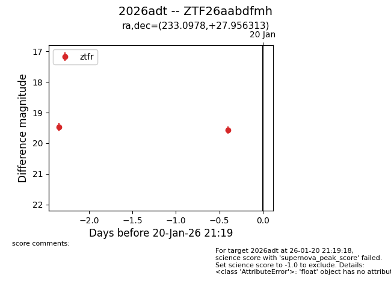
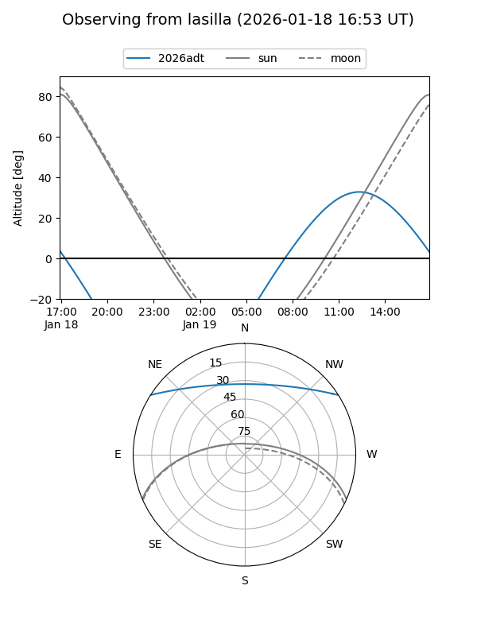
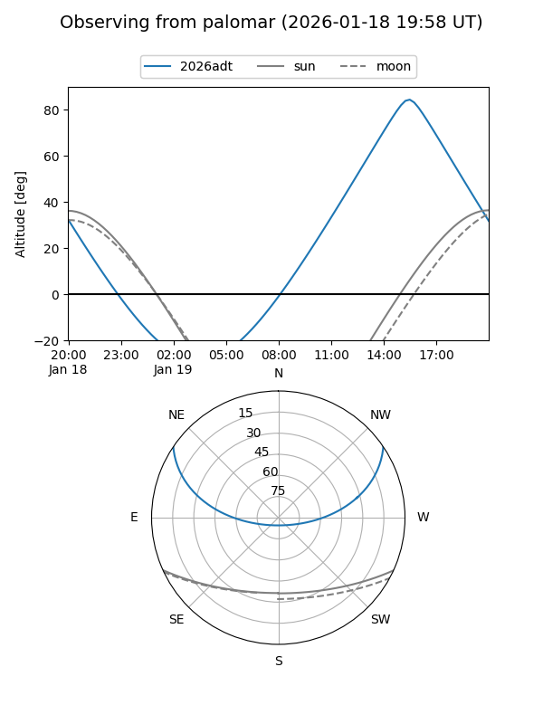

2026adt
Target 2026adt at 2026-01-18 13:30
Aliases and brokers:
FINK: link
Lasair: link
ALeRCE: link
TNS: link
YSE: link
alt names
ZTF26aabdfmh (ztf,fink_ztf)
2026adt (tns,yse)
Coordinates:
equatorial (ra, dec) = 233.0978,+27.95631
equatorial (HMS+DMS) = 15:32:23.47,+27:57:22.73
galactic (l, b) = (43.8207,+54.47567)
Flags:
Photometry:
last ztfr=19.47
1 ztfr detections
Lightcurve

Visibility


Additional plots